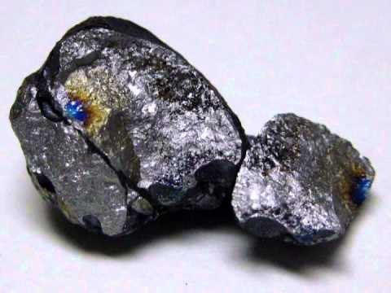
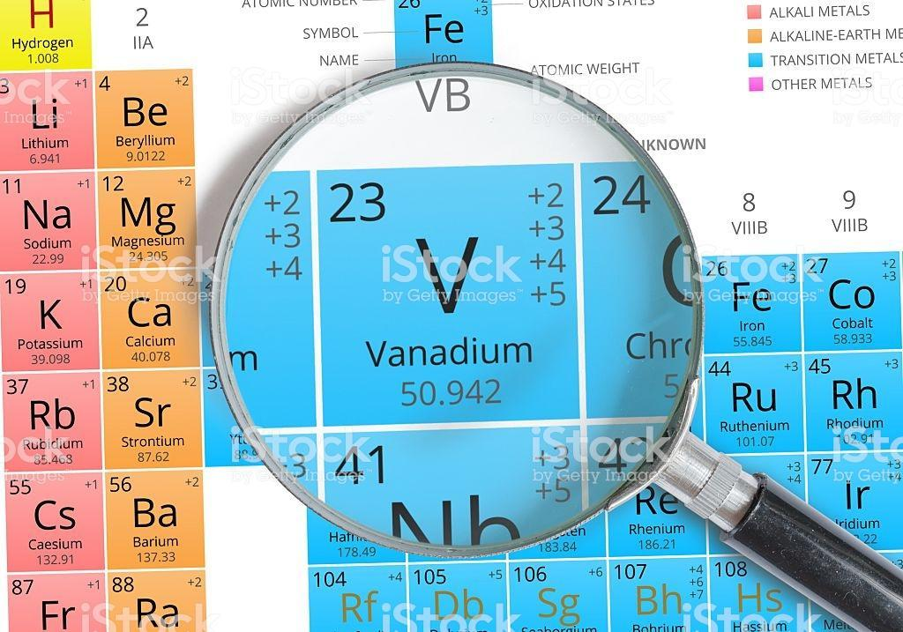
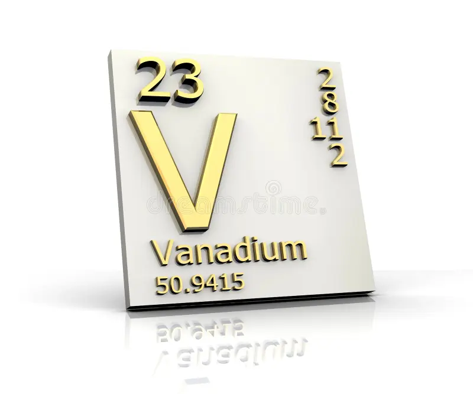

Ванадий
Вана́дий (химический символ — V, от лат. Vanadium) — химический элемент 5-й группы (по устаревшей классификации — побочной подгруппы пятой группы, VB), четвёртого периода периодической системы химических элементов Д. И. Менделеева, с атомным номером 23 и атомной массой 50,9415(1). Элемент относится к переходным металлам. Простое вещество ванадий — пластичный металл серебристо-серого цвета, покрывается на воздухе красивой плёнкой из оксидов ванадия, разные цвета которой обусловлены разной толщиной оксидного слоя.

Ванадий был открыт в 1801 г. мексиканским минералогом А. дель Рио, который получил окрашенные оксиды и соли неизвестного элемента, и назван по красивому красному цвету некоторых солей эритронием (от греч. ἐρυτρός – красный). В 1830 г. шведский химик Н. Сефстрём повторно открыл элемент и назвал его ванадием в честь древнескандинавской богини красоты Ванадис. В 1867 г. английский химик Г. Роско получил металлический ванадий восстановлением VCl2 водородом.

Содержание ванадия в земной коре 0,02 % по массе. В свободном виде в природе не встречается. Поскольку размеры атомов ванадия и самых распространённых металлов Fe, Ti, Mn, а также размеры ванадат- и фосфат-ионов близки, ванадий входит в состав многих минералов и комплексных руд других металлов (магнетитовых, титаномагнетитовых, осадочных железных, фосфоритов, апатитов и др.). Основные минералы ванадия: патронит, деклуазит, карнотит, ванадинит, роскоэлит. Ванадий содержится в веществах органического происхождения: нефти, углях, битумах и других, морской воде.
Основной источник ванадия – ванадийсодержащие титаномагнетиты. При их плавке ванадий переходит в чугун, при переработке которого в сталь получают шлаки, содержащие 10–16 % V2O5. Шлаки обжигают с NaCl, KCl, Na2CO3; обожжённый материал выщелачивают водой и разбавленной H2SO4. Из растворов выделяют V2O5. Восстановлением V2O5 ферросилицием или Al получают феррованадий (35–80 % V). Ковкий металлический ванадий получают кальциетермическим восстановлением V2O5 или V2O3, восстановлением V2O5 алюминием, вакуумной карботермией V2O3, магниетермией VCl3. Ванадий наиболее высокой чистоты получают термической диссоциацией VI2. Плавят ванадий в вакуумных дуговых печах с расходуемым электродом. Мировое производство ванадия около 86 млн т/год (2020).

Ванадий в основном используют как легирующий компонент специальных конструкционных ванадийсодержащих сталей, обладающих хорошей ковкостью, прочностью, сопротивлением усталости и износоустойчивостью. В сталях ванадий взаимодействует с растворённым углеродом, образуя твёрдые и жаростойкие карбиды, которые способствуют образованию мелкокристаллической структуры. Ванадий используют также для легирования чугуна, как компонент сплавов для постоянных магнитов, жаропрочных, твёрдых и коррозионностойких сплавов, в атомной энергетике – для изготовления оболочек топливных элементов и ядерных реакторов; в химической промышленности соединения ванадия применяют как катализаторы. 48V – радиоактивный индикатор.